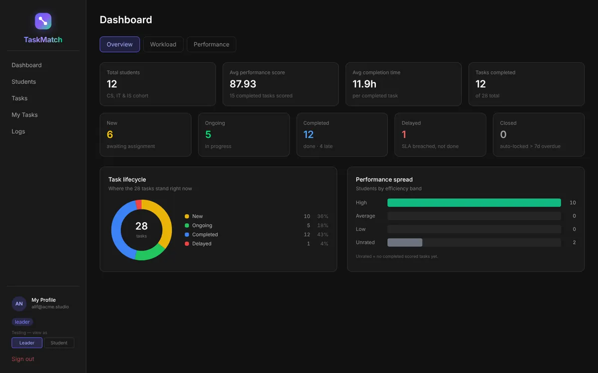
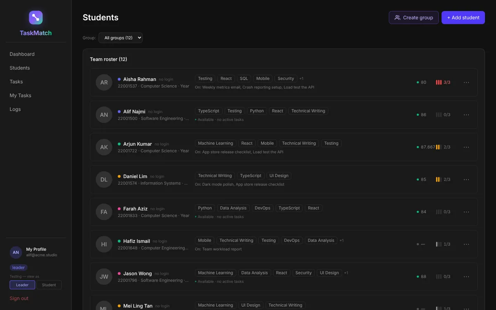
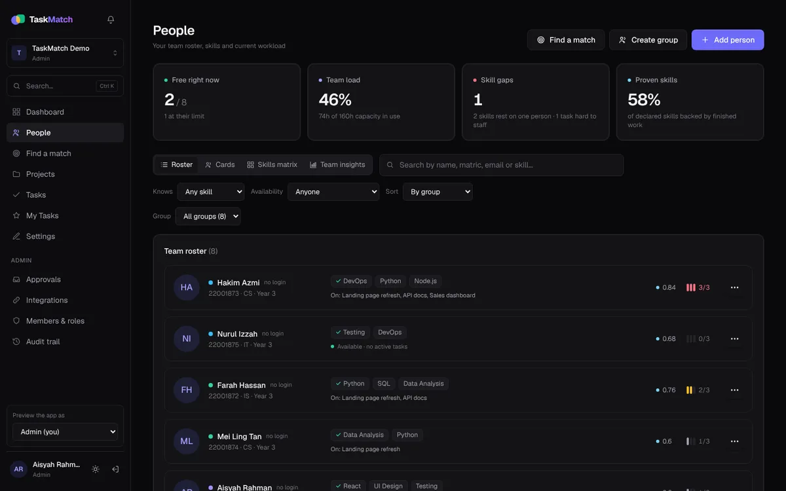
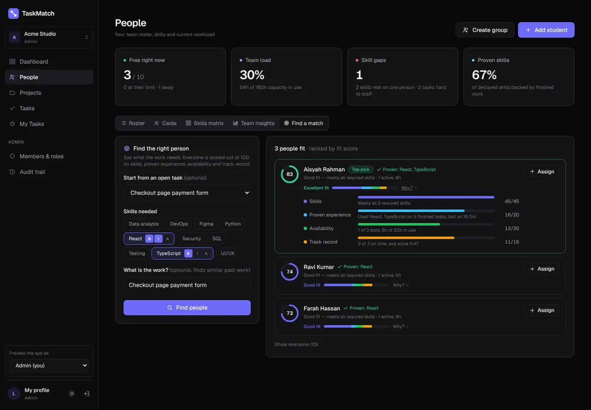
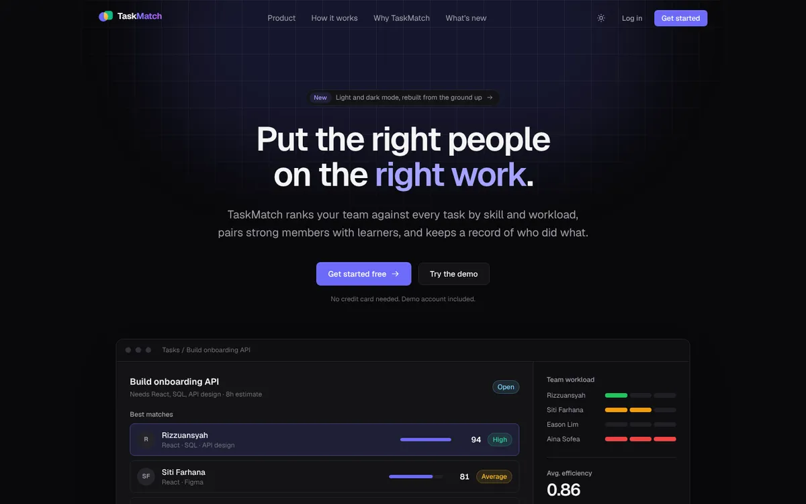

TaskMatch was my final year project at UTP. The idea is simple: when a team lead hands out work, match each task to people by the skills it needs, not by whoever happens to be free. Cap how much any one person carries. And pair strong people with learners, so skills spread across the team instead of sitting with one person.
It worked, and it was well received. But looking at it after submission, it was very much a student project. So I rebuilt it.

What was wrong with v1
- Security was an afterthought. A database key was written straight into the code, most tables had no access rules, and several endpoints answered anyone who asked. Worse, a user's role was stored somewhere they could edit themselves, so any student could quietly make themselves a team lead.
- No design system. Six bright colours, one dark theme, and a light mode that showed white text on white on half the pages.
- The dashboard showed totals, not answers. It told you how many tasks existed. It didn't tell a lead what needed them today.
- The matcher was a black box. It ranked people, but couldn't say why.
What changed in v2
I worked through it in phases, each one a pull request with before and after screenshots, the way I'd want a team to hand work over at my job.
- Locked down first. Every endpoint needs a verified login, every table has row-level security, roles live where only admins can change them, and there's an audit trail of who did what.
- One design system. Neutral colours with a single accent, and light and dark modes that both actually work.
- A dashboard that answers questions: trends, what needs attention today, and whether work is going to the right people.
- Real team features: workspaces and projects, board and calendar views, notifications and approvals, Ctrl+K search, and import from GitHub and Jira.



The part I'm proudest of: a score you can argue with
In v2 everyone gets a fit score out of 100 for a piece of work, and the app always shows how it got there:
- Skills (45): do they meet each required skill at the right level?
- Proven experience (20): have they actually used those skills on finished work, not just ticked them on a profile? Older work counts for less.
- Availability (20): room on their plate, by task count and by hours.
- Track record (15): finished on time, and how well. New people get a neutral middle score so they aren't buried.
Two rules keep it honest. People who meet every required skill always come first. And anyone missing a required skill is capped at 54, so being free and reliable can't make someone look like a good fit for work they can't do. When someone doesn't fully fit, the app names a mentor who has the missing skill.

The weights aren't fixed either. TaskMatch compares its predictions with how assignments actually turned out, and a lead can re-tune the weights from that evidence.
How I built it
I built v2 with two AI coding assistants, Claude and Kiro, and acted as the product owner: I wrote what each phase had to do, reviewed every change, and kept a running log so either assistant could pick up where the other left off. It felt a lot like my day job, just with very fast developers.
What I'd do differently
- Security on day one, not phase one. Retrofitting access rules onto an app that already works is slower and riskier than starting with them. A demo password even slipped into the public history once and had to be changed.
- Pick the design system before the first screen. Restyling every page afterwards was the most tedious part of the rebuild.
- Write the spec before the code. The phases that started with a written page of what "done" meant went smoothly. The ones that didn't got reworked.
- Make the logic explainable from the start. The fit score made the matcher trustworthy overnight. If I'd built it that way in the FYP, it would have been a better project too.

Everything is on GitHub, with a write-up and before/after screenshots for every release on the wiki.
Live demo · no loginTry TaskMatch yourselfOpens a demo team as a team lead, in one click.